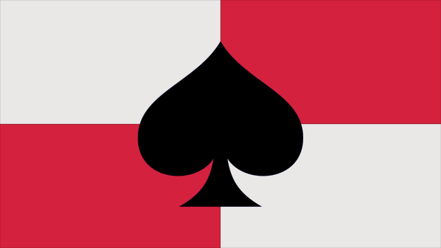

LOK PiK Wrocław
Stowarzyszenie kolekcjonersko-strzeleckie
Za ile

Cennik dla członków zwyczajnych
- Składka członkowska: 60 zł na kwartał.
- Trening na strzelnicy: bezpłatnie.
Cennik dla członków wspierających
- Składka członkowska: dowolna kwota (minimum 1 zł) na rok.
- Trening na strzelnicy: 10 zł za jedno wejście.
Powyższe kwoty dotyczą członków klubu. Co do zasady, nie prowadzimy regularnych zajęć dla osób z zewnątrz. Chcesz z nami strzelać - wstąp do nas!
Numer konta
To jest numer naszego konta bankowego w ING Banku Śląskim, na które należy wpłacać składki członkowskie oraz pozostałe opłaty:
56 1050 1575 1000 0091 1325 7571
Zgromadzone środki przekazujemy w kwartalnych rozliczeniach do Biura Dolnośląskiego Zarządu LOK we Wrocławiu. Również raz na kwartał, Skarbnik Klubu publikuje szczegółowe sprawozdanie finansowe zawierające uzasadnienie każdej wydanej złotówki. Klub LOK PiK jest prowadzony wyłącznie po kosztach, zaś finanse klubowe są i zawsze będą całkowicie przejrzyste dla jego członków.